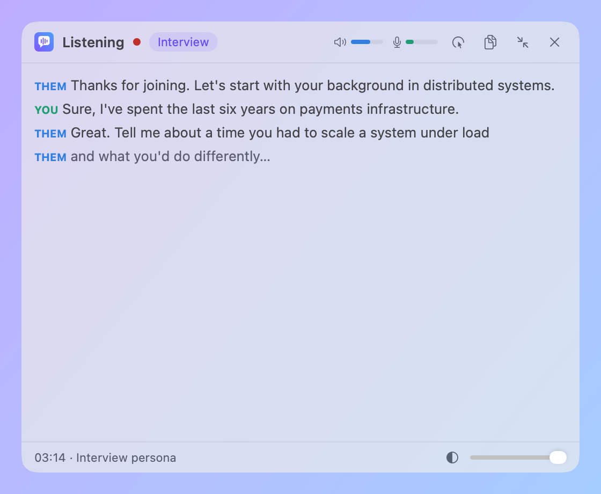

Shadow
See what they say and what you say, live. Transcribed on your Mac, shown in a floating overlay. Free and open source.
View on GitHub
What it does
Two streams
System audio is Them. Your microphone is You.
System audio is Them. Your microphone is You.
On-device
Apple SpeechAnalyzer. No keys, accounts or cloud.
Apple SpeechAnalyzer. No keys, accounts or cloud.
Visible by design
No stealth mode. A reminder before each session.
No stealth mode. A reminder before each session.
Private
Audio is never written to disk. Only text is saved.
Audio is never written to disk. Only text is saved.
Hotkeys
⌘⇧Spacestart or stop a session⌘⇧Hshow or hide the overlay⌘⇧Ttoggle click-through⌘⇧Ecompact or expand
Install
Requires macOS 26 or later. There is no release build yet, so build from source:
git clone https://github.com/kalahroudi/shadow.git && cd shadow && scripts/bundle.sh
The README has a prompt you can paste into an AI coding agent to do this for you.
Roadmap
- LLM answers
- Screenshots and OCR
- RAG over your files
- History
- Sparkle updates
- Notarization, DMG and Homebrew cask